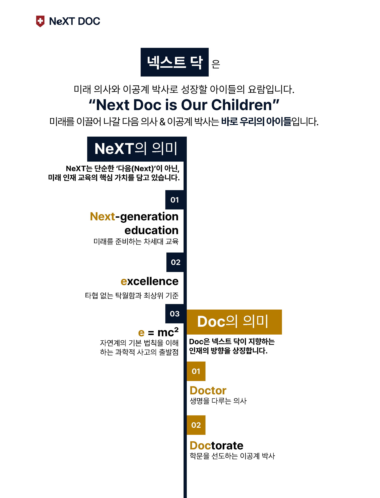

학원 소개
NeXT DOC Philosophy
대표 인사말
정혜원 대표
의대 & 이공계 준비 올케어 교육기관 NeXT DOC
- 사단법인 과학의 전당 교육사업위원장
- 초·중 의·치·약 전문학원 BIG5 대표
- 전국 청소년 토론대회 최고위원
- 『퍼플카우 미래동기부여』 저자
- 이공계·의대 진학 교육 30년 경력
"의대 진학, 그 이상의 가치를 설계합니다."
넥스트 닥은 아이들의 잠재력을 깨우고 스스로 문제를 해결하는 사고력의 힘을 믿습니다. 대치동 30년 교육 노하우를 바탕으로 우리 아이의 골든타임을 가장 가치 있게 만듭니다.
Core Program
사고력 수학
원리를 관통하는 사고의 확장과 창의적 문제 해결 능력을 기릅니다.
통합 과학
물·화·생·지 통합 커리큘럼을 통해 이공계 진학의 기초를 확립합니다.
입시 매니징
성공적인 의대 진학을 위한 1:1 맞춤 로드맵을 제공합니다.

NeXT DOC 커리큘럼
의대 및 최상위 이공계 진학을 위한 단계별 핵심 성장 전략
01
창의 사고력 기반
Thinking Base
문제 해결의 근본인 '생각하는 힘'을 기릅니다. 사고력 수학과 과학 탐구로 기초 역량을 구축합니다.
02
개념 및 심화 마스터
Concept & Advanced
핵심 개념을 완벽하게 이해하고 심화 문제풀이로 연계하여 상위권 도약을 준비합니다.
03
실전 입시 전략
Final Strategy
의대 입시를 위한 실전 모의평가와 데이터 분석, 최적화된 포트폴리오 관리로 최종 합격을 만듭니다.